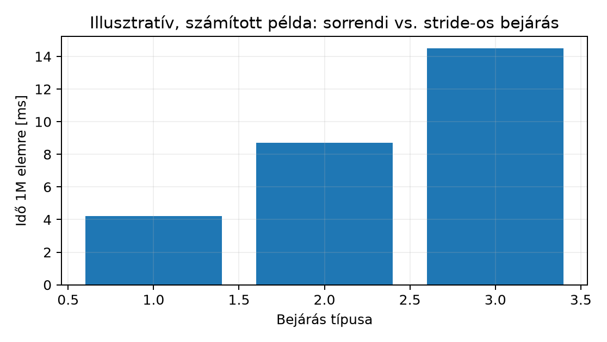

Vegyünk két olyan assembly rutint, amelyek utasításszámban,
elágazásban és regiszterhasználatban szinte azonosak, mégis drasztikusan
eltérő futási időt mutatnak. Mindkettő egy nagy int tömböt
jár be: az egyik minden elemet sorban érint, a másik minden lépésben
több ezer bájtot ugrik. A különbség oka nem az utasításokban, hanem a
memóriahozzáférési mintában rejlik. Ez az alfejezet megmutatja, hogyan
épül fel a cache-hierarchia, miért számít a sorrend, és hogyan mérhető
ez assembly szinten — a korlátok őszinte jelölésével.
Az a023 alfejezetben már láttuk, hogyan indexelünk egy tömböt skálázott regisztereltolással. Most azt vizsgáljuk, mitől lesz egy ilyen bejárás gyors vagy lassú.
A cache (gyorsítótár) egy kicsi, gyors memória a processzor és a főmemória között. Célja, hogy a gyakran használt adatokat közel tartsa a maghoz, mert a főmemória (DRAM) elérése nagyságrendekkel lassabb.
A cache nem bájtokként, hanem cache-sorként (cache line) mozgat adatot. Egy cache-sor tipikusan 64 bájt. Amikor a processzor egy bájtot kér, a hardver a teljes sort betölti a cache-be. Ez a térbeli lokalitás (spatial locality) kihasználása: ha egy címre hivatkozunk, valószínűleg a szomszédos címekre is hamarosan szükség lesz.
A temporális lokalitás (temporal locality) ezzel rokon fogalom: ha egy adatot egyszer elértünk, rövid időn belül újra elérhetjük, ezért érdemes a cache-ben tartani. A mi vizsgálataink elsősorban a térbeli lokalitásra épülnek.
A modern processzorok több cache-szintet használnak:
| Szint | Jellemző méret | Jellemző elérési idő | Megosztás |
|---|---|---|---|
| L1 | 16–128 KB | 1–4 ciklus | magonként, I- és D-cache külön |
| L2 | 128 KB – 8 MB | 10–20 ciklus | magonként |
| L3 | 4–64 MB | 30–50 ciklus | magok között / csomagon |
| DRAM | GB nagyságrend | 100–300 ciklus | rendszer |
A táblázat értékei jellemző tartományok, nem konkrét hardverre vonatkozó mérések. A pontos méret és latencia processzorfüggő, ezért minden konkrét állítást hardverhez kell kötni.
A hierarchia lényege: minél közelebb van az adat a maghoz, annál gyorsabb az elérés, de annál kisebb a kapacitás. Az L1 tipikusan két részre oszlik: utasítás-cache (I-cache) és adat-cache (D-cache). Az itteni vizsgálatok az adat-cache-re vonatkoznak.
Tegyük fel, hogy egy 64 bájtos cache-sorba 16 darab 32 bites
int fér bele. Sorrendi olvasásnál:
elem 0, 1, 2, ..., 15 -> egy cache-sor betöltése, mind a 16 elem elérhető
elem 16, 17, ..., 31 -> következő cache-sor betöltéseMinden betöltött cache-sor 16 elemet szolgálhat ki. Ez a térbeli lokalitás lehetősége: a vizsgált cache-szinten a sorbetöltések száma legfeljebb az elemszám 1/16-a. Hogy ebből ténylegesen hány DRAM-tranzakció lesz, azt a sorméret egyedül nem határozza meg. Számít, melyik cache-szintről beszélünk, mi volt korábban a cache-ben, mit tölt be előre a hardveres előbetöltő (prefetcher), és mekkora az asszociativitás.
Nagy stride-ú ugrálásnál viszont:
elem 0, 1024, 2048, ... -> minden hozzáférés új cache-sor betöltését igényliEgyetlen ilyen végigfutásban minden hozzáférés másik cache-sort érint, és abból csak egy elemet használunk: a betöltött 64 bájtból 60 bájt kihasználatlan, hacsak a sor nem marad a cache-ben addig, amíg a bejárás egy későbbi menete a szomszédos elemekért visszatér.
Munkakönyvtár: ~/arm-labor/a64/a049/ —
az alfejezet minden laborfájlja ide kerül, és minden parancs innen
futtatandó (a könyvtárrendet a Labor-alapkörnyezet alfejezet írja le).
mkdir -p ~/arm-labor/a64/a049
cd ~/arm-labor/a64/a049Írjunk egy assembly programot, amely egy nagy tömböt sorrendben, majd nagy stride-pal jár be. A mérés QEMU-emulációban fut, ahol a cache-viselkedés nem hardverhű — ezt a példa után külön kiemeljük.
// lab-seq-a049.s – sorrendi bejárás
// AArch64 (A64 ISA), Linux, qemu-aarch64 user-mode
.section .data
.balign 64 // cache-sor határára igazítunk
arr:
.fill 1048576, 4, 1 // 4 MB, 1 048 576 darab 32 bites int, mind 1
.set ARR_SIZE, 1048576
.section .text
.global _start
_start:
mov x0, #0 // összeg
ldr x1, =arr // tömb alapcíme
mov x2, #ARR_SIZE // elemek száma
mov x3, #0 // index
seq_loop:
cmp x3, x2
b.ge seq_done
ldr w4, [x1, x3, lsl #2] // w4 = arr[x3]
add x0, x0, x4 // összegzés
add x3, x3, #1
b seq_loop
seq_done:
cmp x0, x2
cset w0, ne
mov x8, #93 // exit syscall
svc #0
.section .note.GNU-stack,"",%progbits// lab-stride-a049.s – stride-os bejárás
// AArch64 (A64 ISA), Linux, qemu-aarch64 user-mode
.section .data
.balign 64
arr:
.fill 1048576, 4, 1
.set ARR_SIZE, 1048576
.set STRIDE, 1024 // 1024 * 4 bájt = 4096 bájt ugrás
.section .text
.global _start
_start:
mov x0, #0
ldr x1, =arr
mov x2, #ARR_SIZE
mov x5, #0 // oszlop a stride szerinti bejarashoz
stride_column:
mov x3, x5
stride_loop:
cmp x3, x2
b.ge stride_next_column
ldr w4, [x1, x3, lsl #2]
add x0, x0, x4
add x3, x3, #STRIDE
b stride_loop
stride_next_column:
add x5, x5, #1
cmp x5, #STRIDE
b.lt stride_column
stride_done:
cmp x0, x2
cset w0, ne
mov x8, #93
svc #0
.section .note.GNU-stack,"",%progbits# Assemble és link
aarch64-linux-gnu-as -o lab-seq-a049.o lab-seq-a049.s
aarch64-linux-gnu-ld -o lab-seq-a049 lab-seq-a049.o
# elvárt: GNU_STACK RW
readelf -lW lab-seq-a049 \
| awk '$1=="GNU_STACK"{f=$7} END{print "GNU_STACK", f; exit !(f=="RW")}'
# Futtatás QEMU user-mode-ban
qemu-aarch64 ./lab-seq-a049
echo $? # várt: 0Az időméréshez tisztán assemblyben a clock_gettime
syscall használható, de bonyolult. Egyszerűbb a shell time
parancsa vagy a perf eszköz. Az alábbi táblázat
hipotetikus/illusztratív értékeket mutat, mert
QEMU-emulációban a cache-viselkedés nem hardverhű.
| Bejárás | Feldolgozott elemek | Idő (ms) | Megjegyzés |
|---|---|---|---|
| Sorrendi | 1 048 576 | 4,2 | illusztratív |
| Stride 1024 | 1 048 576 | 14,5 | minden elem egyszer, oszloponként |
| Stride 64 | 1 048 576 | 8,7 | minden elem egyszer, oszloponként |
Fontos: mindkét program azonos számú elemet dolgoz
fel. A stride-os változat külső ciklusa az összes maradékosztályt
bejárja (0, STRIDE, ..., majd
1, 1+STRIDE, ...), ezért minden elem pontosan egyszer
szerepel; ennek levezetését és ellenőrzését lásd lent. Az idők
szemléltető számok; a sorrend és a különbség tényleges mérést
igényel.

A fenti stride-os verzió a kezdőindexet változtatja
(0, 1024, 2048, ..., majd 1, 1025, 2049, ...).
Hogy így minden elem pontosan egyszer szerepel, azt nem a futás
eredménye, hanem a ciklusok szerkezete igazolja.
seq_loop elején x3 a következő olvasandó
index, és a 0 … x3−1 indexeket a ciklus már pontosan
egyszer olvasta. x3 = 0-ról indul, lépésenként 1-gyel nő,
és x3 = N-nél kilép; így a 0 … N−1 mindegyike
pontosan egyszer kerül sorra, összesen N olvasás.c = x5 értékei 0 … S−1
(
= STRIDE), a belső ciklus a k = c + S·j
indexeket olvassa, amíg k < N. A
leképezés a bejárt párokon bijektív a
0 … N−1 tartományra: minden k-hoz a maradékos
osztás egyetlen párt ad, c = k mod S és
j = k div S, és ez a pár valóban sorra kerül, mert
c < S, és k < N. Ez bármely
mellett igaz, mert a belső ciklus a k < N feltételnél
áll meg. Az olvasások száma tehát pontosan N, mint a
sorrendi bejárásnál.Az oszloponkénti sorrend tehát ugyanazt a munkát, ugyanannyi olvasással végzi el, csak más sorrendben; a cache-sorok újratöltése és a TLB-viselkedés miatt a sorrendi bejárásnál lassabb lehet.
1 048 576 (minden elem
1).1 048 576.0, eltérésnél
1.A 0 tehát csak annyit igazol, hogy az
összeg az elvárt N. Azt nem, hogy minden elemet pontosan
egyszer olvastunk. Csupa 1-es adaton egy olyan hibás rutin is
N-et ad, amely N-szer ugyanazt az
arr[0]-t olvassa, és ugyanígy láthatatlan marad egy
kihagyott elem, ha helyette egy másikat kétszer olvasunk. A helyettesítő
eszközlánccal kipróbálva a lab-seq-a049.s olyan mutánsa,
amelyben a ldr w4, [x1, x3, lsl #2] helyére
ldr w4, [x1] került, 0-s állapottal lépett ki:
ez hamis PASS. Az összeg egyezéséből a dinamikus munka
mennyisége sem következik, hiszen fölösleges vagy elhagyott, majd
algebrailag pótolt olvasásokat nem különít el.
A lefedettséget a fenti levezetés igazolja. Oktatási ellenpróbaként
egy külön C-program ugyanazokat az indexsorozatokat járja be,
heterogén adattal (a[i] = i + 1, 64 bites
összeg) és explicit látogatásszámlálóval. A számláló
minden olvasásnál növeli az adott index visits[] értékét, a
végén pedig külön jelzi a hiányzó és a többször olvasott indexeket,
valamint az N-től eltérő olvasásszámot. A mért assembly
programokba nem teszünk ilyen nyomkövetést, hogy a mért ciklus
változatlan maradjon:
/* lab-cover-a049.c — a két bejárás lefedettségi próbája (oktatási ellenpróba, host C).
* Az indexsorozatok pontosan a lab-seq-a049.s és a lab-stride-a049.s ciklusait
* követik; a mutánsok szándékosan hibásak. Minden olvasás a visits[] számlálót is
* növeli: ebből derül ki a kihagyás, a duplikáció és az eltérő olvasásszám. */
#include <stdint.h>
#include <stdio.h>
#include <stdlib.h>
#define N 1048576u
#define STRIDE 1024u
static uint32_t a[N];
static uint8_t visits[N];
static uint64_t reads, sum;
static void visit(uint32_t k) /* egy olvasás: adat + látogatási nyom */
{
sum += a[k];
reads++;
if (visits[k] < 255u)
visits[k]++;
}
static void seq(void) { for (uint32_t k = 0; k < N; k++) visit(k); }
static void stride(void) /* k = c + STRIDE·j, oszloponként */
{
for (uint32_t c = 0; c < STRIDE; c++)
for (uint32_t k = c; k < N; k += STRIDE)
visit(k);
}
/* szándékosan hibás változatok */
static void mut_a0(void) { for (uint32_t k = 0; k < N; k++) visit(0); } /* mindig a[0] */
static void mut_skipdup(void) /* a[5] helyett a[4]: kihagyás + duplikáció */
{
for (uint32_t k = 0; k < N; k++) visit(k == 5u ? 4u : k);
}
static void mut_extra(void) { seq(); visit(7); } /* egy többletolvasás */
static int run(const char *name, void (*f)(void))
{
for (uint32_t k = 0; k < N; k++) visits[k] = 0;
reads = sum = 0;
f();
uint64_t missing = 0, dup = 0;
for (uint32_t k = 0; k < N; k++) {
missing += visits[k] == 0;
dup += visits[k] > 1;
}
const uint64_t want = (uint64_t)N * (N + 1u) / 2u; /* a[i] = i + 1 összege */
int ok = reads == N && missing == 0 && dup == 0;
printf("%-14s olvasás=%-8llu hiányzó=%-8llu többször=%-3llu összeg %s %s\n", name,
(unsigned long long)reads, (unsigned long long)missing,
(unsigned long long)dup, sum == want ? "egyezik" : "ELTÉR", ok ? "OK" : "HIBA");
return ok;
}
int main(void)
{
for (uint32_t k = 0; k < N; k++)
a[k] = k + 1u; /* heterogén adat: minden elem különböző */
int ok = run("sorrendi", seq) & run("stride", stride);
puts("-- szándékosan hibás változatok (HIBA az elvárt):");
int bad = !run("a[0] N-szer", mut_a0) & !run("kihagy+dupláz", mut_skipdup)
& !run("többletolvasás", mut_extra);
puts(ok && bad ? "COVER: PASS" : "COVER: FAIL");
return !(ok && bad);
}gcc -std=c11 -O2 -Wall -Wextra -o lab-cover-a049 lab-cover-a049.c
./lab-cover-a049; echo "kilépési állapot: $?"Kimenet (host gcc 13.3, mért):
sorrendi olvasás=1048576 hiányzó=0 többször=0 összeg egyezik OK
stride olvasás=1048576 hiányzó=0 többször=0 összeg egyezik OK
-- szándékosan hibás változatok (HIBA az elvárt):
a[0] N-szer olvasás=1048576 hiányzó=1048575 többször=1 összeg ELTÉR HIBA
kihagy+dupláz olvasás=1048576 hiányzó=1 többször=1 összeg ELTÉR HIBA
többletolvasás olvasás=1048577 hiányzó=0 többször=1 összeg ELTÉR HIBA
COVER: PASS
kilépési állapot: 0A két helyes bejárás minden indexet pontosan egyszer érint. A
mutánsok közül az a[0]-t N-szer olvasó
változatnál a látogatásszámláló N − 1 hiányzó indexet
mutat; a kihagyás és duplikáció egy-egy hiányzó és többször olvasott
indexet ad; a többletolvasásnál az olvasásszám N + 1. A
heterogén összeg itt mindhárom esetben eltér, de önmagában csak egy
kijelölt hibacsaládot tesztel: egy összegtartó csere (például két elem
helyett két másik, azonos összegű elem olvasása) mellett egyezhetne.
Ezért a döntő ellenőrzés a látogatásszámláló, a teljes bizonyíték pedig
a levezetés.
Mit mér a perf QEMU alatt? A
qemu-aarch64 egy x86_64 hostfolyamat, amely a vendég
A64-kódját host-gépi kódra fordítja (TCG), és azt futtatja. Ezért az
alábbi parancs kizárólag hostoldali emulátormérés:
# HOST-mérés: az x86_64 host CPU PMU-jának cache-references / cache-misses eseményei,
# a qemu-aarch64 folyamatra (fordító + generált hostkód + emulált memória) — NEM ARM-mérés.
perf stat -e cache-references,cache-misses qemu-aarch64 ./lab-seq-a049A kapott számok a host processzor cache-eseményei: a QEMU saját
kódjának, a generált hostkódnak és a vendégmemóriát tároló hosttömböknek
a hozzáférései. Ezek nem az ARM-cél cache-missei, nem is azok
közelítései vagy helyettesítői, és a relatív arányukból sem következik
az ARM-cél cache-viselkedése. QEMU-n a labor
funkcionális ellenőrzése marad: a kilépési állapot
(0) az elvárt összeget igazolja; a teljes, egyszeri
bejárást a fenti levezetés és a lefedettségi próba.
A cél hardverének cache-vizsgálata natív AArch64 Linuxon (például Raspberry Pi 4/5-ön) történik, az ott elérhető PMU-eseményekkel:
# NATÍV AArch64-mérés: az adott Arm mag PMU-jának L1D_CACHE (hozzáférés) és
# L1D_CACHE_REFILL (újratöltés) eseménye; a perf ezeket általában
# L1-dcache-loads / L1-dcache-load-misses néven képezi le — perf list-tel ellenőrizendő.
perf stat -e L1-dcache-loads,L1-dcache-load-misses ./lab-seq-a049
perf stat -e L1-dcache-loads,L1-dcache-load-misses ./lab-stride-a049Minden számot azzal együtt kell rögzíteni, hogy melyik processzor (mag típusa) melyik eseményét mérte.
Nem 64 bájtos igazítás. A tömböt
.balign 64-gyel igazítjuk, hogy a cache-sorok határain ne
csússzunk el. Igazítás nélkül a sorok átfedhetnek, a mérés pontatlan
lesz.
Azonos setre leképeződő sorok. Két külön jelenséget kell szétválasztani. Ha a lépés kisebb a sorméretnél, az egymás utáni hozzáférések ugyanabban a sorban maradnak: ez soron belüli lokalitás, nem ütközés. Ha a lépés több sort ugrik át, a hozzáférések különböző sorokat érintenek, és az a kérdés, hány különböző setre képeződnek le. Egyszerű, közvetlen indexelésű modellben a set indexe , ahol a sorméret és a setek száma. Egy soros lépés () különböző setet jár be. Ha ez kevés, és egy setre több különböző sor jut, mint az asszociativitás, akkor a sorok kiszorítják egymást (conflict miss, cache-thrashing).
Konkrét modell: bájt, set, 8 utas asszociativitás (32 KiB, egy tipikus L1D mérete).
| Lépés | Sorban mért lépés | Az első hozzáférések (sor, set) | Bejárt setek | Jelenség |
|---|---|---|---|---|
| 4 B | (0,0), (0,0), (0,0), … 16-szor, majd (1,1) | mind a 64 | soron belüli lokalitás | |
| 64 B | 1 | (0,0), (1,1), (2,2), (3,3), … | 64 | minden hozzáférés új sor, a setek egyenletesen telnek |
| 128 B | 2 | (0,0), (2,2), (4,4), … | minden második sor; a setek fele | |
| 4096 B | 64 | (0,0), (64,0), (128,0), (192,0), … | minden hozzáférés ugyanarra az egy setre esik; 8 sor után kiszorítás |
A 4 bájtos és a 4096 bájtos lépés tehát nem ugyanaz az eset, pedig mindkettő kettő hatványa. Az egyik soron belül marad, a másik azonos setre leképeződő különböző sorokat érint. Pusztán abból, hogy a lépés kettő hatványa, nem következik ütközés: a és az közös osztói döntenek. A valós hardver gyakran hash-elt setindexet, fizikai címzést és többszintű, eltérő geometriájú cache-eket használ, ezért ez a levezetés csak a megadott modellen belül érvényes, és natív méréssel ellenőrizendő.
A tömb mérete kisebb, mint a cache. Ha a tömb elfér az L1 cache-ben, a sorrendi és a stride-os bejárás között kicsi lesz a különbség. A méréshez nagy tömb kell (legalább az L2-nél nagyobb).
QEMU-ban mért értékek összekeverése valós
hardverrel. A QEMU TCG-je funkcionálisan emulál,
cache-hierarchiát nem modellez. A QEMU alatt mért idők és a
perf-számlálók a host gépre vonatkoznak,
ezért a relatív sorrendjük sem jelzi az ARM-cél viselkedését. QEMU-n
csak a funkcionális helyesség és az azonos munkamennyiség ellenőrizhető.
Erről bővebben a Mikrobenchmark készítése és
eredmények értelmezése alfejezetben lesz szó.
A feladatcímkék és a kétlépcsős megoldások használatát az Olvasói útmutató írja le.
Magyarázd el, miért hatékonyabb a sorrendi bejárás, mint a nagy stride-ú bejárás, a cache-sor fogalmát használva. Térj ki a térbeli lokalitásra is.
Módosítsd a stride-os assembly programot úgy, hogy a stride értéke 32 legyen (128 bájt). Hasonlítsd össze az eredményt a stride 1024-es verzióval. Mit tapasztalsz?
Írj egy C programot, amely sorrendben és stride-pal is bejár egy nagy
tömböt, és méri az időt clock_gettime-nal, az a052 mikrobenchmark-vázának mintáját követve
(ismételt futás, medián, szóródás). Futtasd QEMU-ban, és értelmezd az
eredményt. Miért nem hardverhű a QEMU-ban mért érték?
A feladatcímkék és a kétlépcsős megoldások használatát az Olvasói útmutató írja le.
Egy cache-sor 64 bájt, egy int 4 bájt — hány elemet
szolgál ki EGYETLEN cache-sor-betöltés sorrendi bejárásnál, és hányat
nagy stride-nál?
A cache-sor 64 bájt, ami 16 darab 32 bites int-et
tartalmaz. Sorrendi bejárásnál egy cache-sor betöltése után a következő
15 elem is elérhető a cache-ből, így a vizsgált cache-szinten a
sorbetöltések száma legfeljebb az elemszám 1/16-a. Ez a térbeli
lokalitás lehetősége; a tényleges DRAM-forgalom a cache-szinttől, az
előbetöltéstől és a korábbi állapottól is függ. Nagy stride-ú bejárásnál
minden hozzáférés új cache-sor betöltését igényli, de abból csak egy
elemet használunk, így a térbeli lokalitás nem érvényesül. A
térbeli lokalitás azt jelenti, hogy a szomszédos
címekre nagy valószínűséggel hamarosan szükség lesz — ezt a cache-sor
tölti ki.
128 bájt két 64 bájtos cache-sor — hány cache-sort HAGYUNK KI minden lépésnél stride 32-nél, és hányat stride 1024-nél?
A stride 32 (128 bájt) esetén egy oszlopbejárás pontosan
minden második cache-sort érinti, és mindegyikből egy
elemet használ. A teljes külső ciklust is figyelembe kell venni: a
következő oszlop (x5 + 1) ugyanezeket a sorokat érinti
újra, a szomszédos 4 bájtért. Hogy ilyenkor a sor még a cache-ben van-e,
az attól függ, mi szorította ki közben. Stride 32-nél egy oszlop 32 768
különböző sort érint (2 MiB), stride 1024-nél 1024 sort (64 KiB), de
azokat egyetlen L1-setre képezi le.
A fenti modell-L1-ben (, , 8 utas, LRU) egy egyszerű szimuláció szerint a sorrendi bejárás 65 536 L1-hibát ad, a stride 32 és a stride 1024 pedig egyaránt minden hozzáférésnél hibázik (1 048 576). Az L1-modell tehát a kettőt nem rangsorolja. A különbséget az L2 mérete és geometriája, a hardveres előbetöltő és a TLB dönti el; ezek modellenként más sorrendet adhatnak. Ezért a sebességrangsor csak feltételes modelljóslat: például ha az L2 elég nagy és asszociatív ahhoz, hogy egy stride 1024-es oszlop 64 KiB-os sorkészlete a következő oszlopig benne maradjon, a stride 1024 akár gyorsabb is lehet a stride 32-nél. A tényleges sorrendet natív AArch64-en kell mérni, azonos elemszámmal és ismételt futtatással (lásd az a052 mintáját). A mért rangsor akkor is helyesen értelmezhető, ha eltér a jóslattól, feltéve hogy a mag típusa, a cache-paraméterek és a mért PMU-esemény dokumentálva van.
Gondold át, mit szimulál ténylegesen a QEMU TCG-je (Tiny Code Generator): utasításonkénti funkcionális fordítást, vagy a cache/DRAM-késleltetés cikluspontos modelljét is?
A clock_gettime-nal mért idő QEMU-ban nem
hardverhű, mert a QEMU egy szoftveres emulátor, amely nem
modellezi a valódi cache-hierarchiát, a DRAM-késleltetést és a
processzor pipeline-ját. A mért idő a host gépen futó emulátor ideje.
Sem az abszolút értéke, sem a sorrendi és a stride-os bejárás közötti
különbség iránya nem következtet az ARM-cél viselkedésére, mert a
különbséget a host cache-e és a QEMU belső adatszerkezetei alakítják.
QEMU-n a program funkcionális helyessége ellenőrizhető (azonos elemszám,
helyes összeg). Hardverhű méréshez fizikai Raspberry Pi vagy más AArch64
hardver szükséges, a PMU-eseményekkel együtt dokumentálva.
A cache-hierarchia (L1/L2/L3/DRAM) a processzor és a főmemória
közötti sebességkülönbséget hidalja át. A cache-sor (jellemzően 64 bájt)
betöltése a térbeli lokalitást használja ki: a szomszédos címek együtt
kerülnek a cache-be. A sorrendi bejárás ezért hatékony, míg a nagy
stride-ú bejárás pazarló. QEMU-n csak a funkcionális helyesség
ellenőrizhető; a QEMU alatt mért idő és perf-számláló a
hostra vonatkozik. Az ARM-cél cache-viselkedését natív AArch64-en,
PMU-eseményekkel kell mérni.
Továbbhasznált definíciók: - Cache-sor: a cache és a főmemória közötti adatmozgatás alapegysége, jellemzően 64 bájt. - Térbeli lokalitás: a szomszédos memóriacímek együttes elérésének valószínűsége. - Stride: a bejárás során az egymást követő hozzáférések közötti ugrás mérete.
A linkek és a dokumentumverziók közös állapota az Olvasói útmutató forrásállapot-táblájában van; itt csak az alfejezet saját megállapításai szerepelnek.
master ág hivatalos user-mode dokumentációja
(user/main.html) nem állít semmit a cache-hierarchia vagy a
memóriasávszélesség modellezéséről — ez összhangban van a fejezet „nem
hardverhű” állításával, de az indoklás pontosabban a TCG (Tiny Code
Generator) funkcionális, nem cikluspontos tervezéséből következik, nem
egy explicit QEMU-dokumentált korlátból..fill,
.balign direktívák. Tartalmilag
ellenőrizve: a jelenlegi kiadás binutils 2.47.Ellenőrzési hiányok, amelyek a fenti ellenőrzés után is
ténylegesen fennmaradnak: - A konkrét cache-méretek és elérési
idők processzorfüggők; az itt megadott értékek jellemző tartományok, nem
konkrét hardverre vonatkoznak. - A QEMU cache-emulációjának pontossága
verziófüggő; a mért értékek illusztratívak. - A perf eszköz
QEMU user-mode alatti viselkedése nem ellenőrzött ebben a
munkafolyamatban. - A telepített Ubuntu 24.04 csomagolt QEMU-verzió és a
benne elérhető (hiányzó) cache-modellezés pontos viselkedése nincs
lekérdezve; a fejezetben szereplő értékek hipotetikusak.